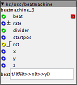
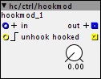

Forum profile : @hellcore
Contributor prefix : hc
Objects
beatmachine.axo

Bytebeat style "noise" generator, a good description of bytebeat can be found @ http://canonical.org/~kragen/bytebeat/
Provides a number of preset "beats", selecting 0 will use the beat field on the object (make sure this is populated). Beat equations can be found in beatmachine/equations.c
Check the help patch!
hookmod.axo

Modified version of the factory hook object, unhook on rising edge, useful for demuxing from single pot control etc.
Help patch included.